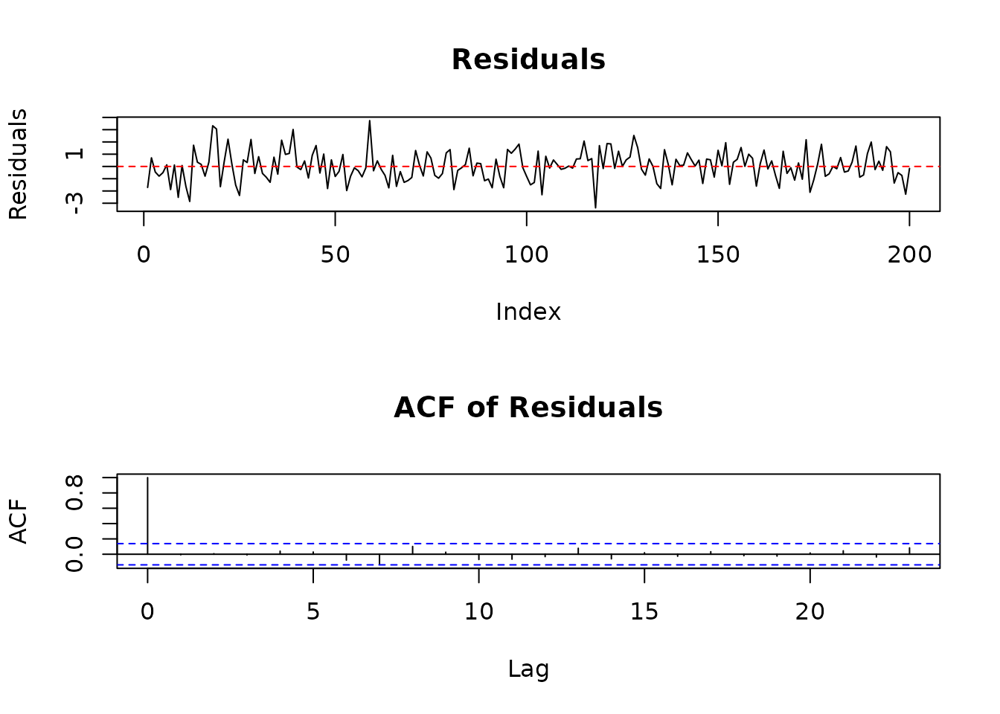
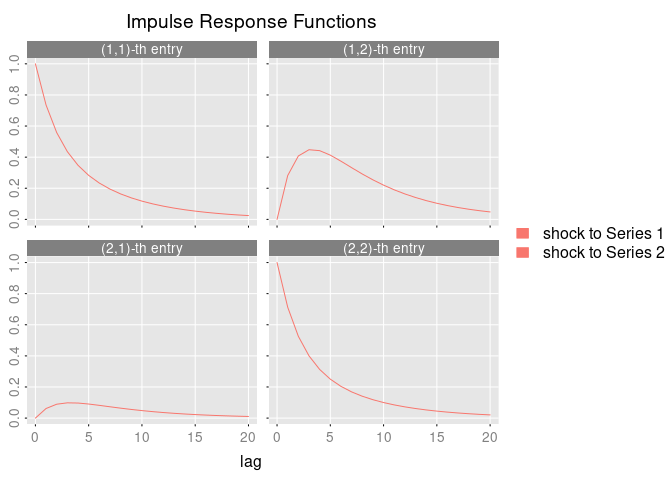
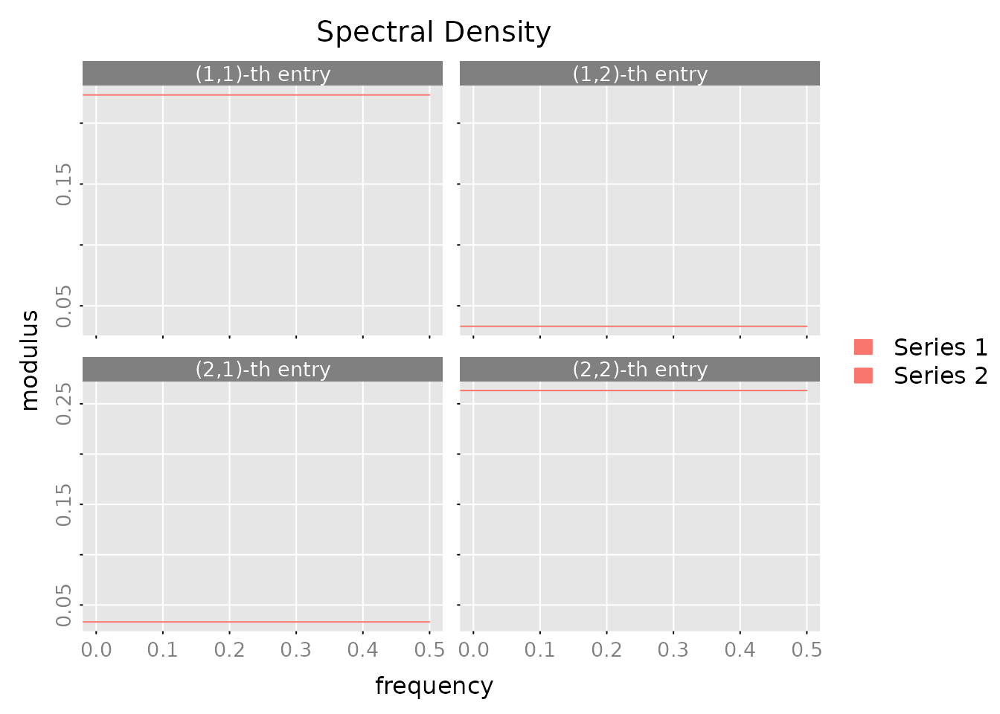
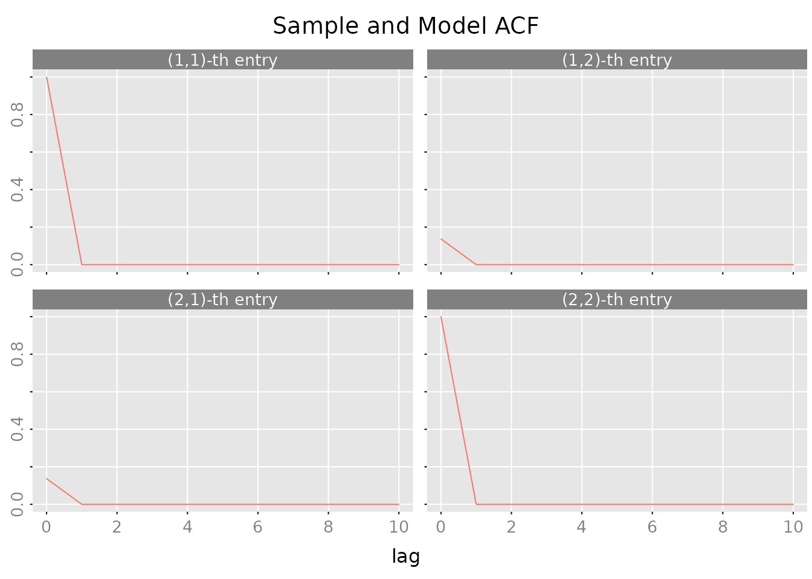
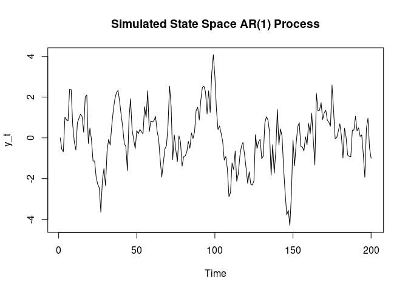
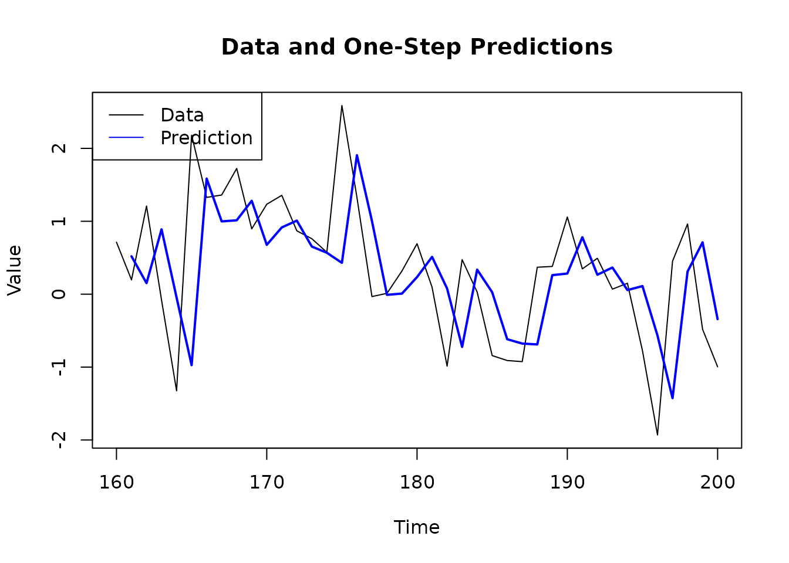

Getting Started with RLDM
RLDM Team
2026-01-31
0_getting_started.RmdWhat is RLDM?
RLDM (Rational Linear Dynamic Models) is an R package for modeling and analyzing stationary time series using linear systems theory. It implements powerful methods for:
- Autoregressive (AR) models - Simple, interpretable baseline models
- ARMA (VARMA) models - Flexible models combining AR and Moving Average terms
- State Space models - Compact representations of complex dynamics
- Impulse response analysis - Understanding how shocks propagate through your system
- Spectral analysis - Analyzing behavior at different frequencies
- Model comparison - Selecting the best model for your data
RLDM is particularly useful when you have multivariate time series data and want to go beyond simple AR(1) models to capture more complex dependencies.
Installation
RLDM depends on the companion package rationalmatrices
for matrix fraction computations. Install both from GitHub:
# Install dependencies first
remotes::install_github("bfunovits/rationalmatrices")
# Then install RLDM
remotes::install_github("bfunovits/RLDM")Then load the package:
Simple AR Model: Univariate Example
Let’s start with a simple univariate time series. We’ll generate synthetic data from an AR(2) process and estimate the model.
Generate AR(2) Data
# Simulate an AR(1) process: y_t = 0.8*y_{t-1} + u_t
#
# In RLDM convention: y_t - 0.8*y_{t-1} = u_t
a_coef <-c(1, -0.8) # AR coefficient with sign convention
b_coef <- c(1) # MA term (just white noise)
sys <- lmfd(a_coef, b_coef)
# Create ARMA model with noise variance = 1
model_true <- armamod(sys, sigma_L = 1, label = "AR(1)")
# Simulate 200 observations
y_list <- sim(model_true, n.obs = 200)
y <- y_list$y
# Plot the simulated data
plot(y, main = "Simulated AR(1) Process", ylab = "y_t", type = 'l')Estimate the Model
Now let’s estimate an AR model from this data using the Yule-Walker method. RLDM uses information criteria (AIC) to automatically select the order:
# Estimate AR model with automatic order selection
result <- est_ar(y, p.max = 10)
# Display basic information
cat("Selected AR order:", result$p, "\n")
#> Selected AR order: 1
cat("Number of parameters:", result$p, "\n")
#> Number of parameters: 1
cat("Information Criterion:", result$stats[result$p + 1, "ic"], "\n\n")
#> Information Criterion: -0.03234463
# View the estimated model
result$model
#> ARMA model [1,1] with orders p = 1 and q = 0
#> AR polynomial a(z):
#> z^0 [,1] z^1 [,1]
#> [1,] 1 -0.7855093
#> MA polynomial b(z):
#> z^0 [,1]
#> [1,] 1
#> Left square root of noise covariance Sigma:
#> u[1]
#> u[1] 0.9790502Model Diagnostics
Check if the model adequately captures the dynamics:
# Compute residuals
residuals <- solve_inverse_de(result$model$sys, y)$u
# Plot residuals
par(mfrow = c(2, 1))
plot(residuals, main = "Residuals", type = 'l', ylab = "Residuals")
abline(h = 0, col = 'red', lty = 2)
# ACF of residuals (should show no significant correlations)
acf(residuals, main = "ACF of Residuals")
Make Predictions
Forecast future values:
# Predict 10 steps ahead
n.ahead <- 10
pred <- predict(result$model, y, h = 1, n.ahead = n.ahead)
# Combine data and predictions
n_obs <- length(y)
plot_range <- max(1, n_obs - 40):n_obs
plot(plot_range, y[plot_range], type = 'l',
xlab = "Time", ylab = "Value",
main = "Data and Predictions")
# Add predictions
pred_time <- (n_obs+1):(n_obs+n.ahead)
lines(pred_time, pred$yhat.ahead[, 1], col = 'blue', lwd = 2)
# Add confidence bands (approximate, assuming normality)
# Extract the variance for each step ahead (the variance increases with horizon)
variance_ahead <- as.vector(pred$sigmahat.ahead[1, 1, ])
se <- sqrt(variance_ahead)
lines(pred_time, pred$yhat.ahead[, 1] + 1.96*se, col = 'blue', lty = 2)
lines(pred_time, pred$yhat.ahead[, 1] - 1.96*se, col = 'blue', lty = 2)
legend("topleft", c("Data", "Forecast", "95% CI"),
col = c("black", "blue", "blue"), lty = c(1, 1, 2))Multivariate Example: Bivariate VAR
Now let’s work with a multivariate system - a 2-dimensional VAR(1) model.
Generate Bivariate Data
# Define a 2D VAR(1) model
#
# [ y1_t ] [ 0.8 0.2 ] [ y1_{t-1} ] [ u1_t ]
# [ y2_t ] = [ 0.1 0.7 ] [ y2_{t-1} ] + [ u2_t ]
# AR matrices (note sign convention)
A1 <- matrix(c(1, 0, -0.8, -0.2,
0, 1, -0.1, -0.7),
nrow = 2, byrow = TRUE)
A1 = array(A1, dim = c(2,2,2))
B0 <- diag(2)
# Create VARMA system
sys_var <- lmfd(A1, B0)
# Noise covariance (correlation between u1 and u2)
rho <- 0.5
Sigma_L <- matrix(c(1, rho, 0, sqrt(1 - rho^2)), nrow = 2)
# Create model and simulate
model_var <- armamod(sys_var, sigma_L = Sigma_L,
names = c("Series 1", "Series 2"))
y_var_list <- sim(model_var, n.obs = 300)
y_var <- y_var_list$y
# Plot both series
plot.ts(y_var, main = "Bivariate VAR(1) Process")Estimate the Multivariate Model
# Estimate VAR model
result_var <- est_ar(y_var, p.max = 5)
cat("Selected VAR order:", result_var$p, "\n")
#> Selected VAR order: 1
cat("Total parameters:", result_var$p * 2^2, "\n\n")
#> Total parameters: 4
# View estimated model
result_var$model
#> ARMA model [2,2] with orders p = 1 and q = 0
#> AR polynomial a(z):
#> z^0 [,1] [,2] z^1 [,1] [,2]
#> [1,] 1 0 -0.73515671 -0.2815920
#> [2,] 0 1 -0.06168781 -0.7129382
#> MA polynomial b(z):
#> z^0 [,1] [,2]
#> [1,] 1 0
#> [2,] 0 1
#> Left square root of noise covariance Sigma:
#> u[1] u[2]
#> u[1] 1.0159564 0.0000000
#> u[2] 0.4655142 0.8032231Analyze the System
Impulse Response Function: How does the system respond to shocks?
# Compute impulse responses
irf <- impresp(result_var$model, lag.max = 20)
# Plot impulse responses
plot(irf,
main = "Impulse Response Functions",
legend = c("shock to Series 1", "shock to Series 2"))
Spectral Density: Understand frequency domain behavior:
# Compute and plot spectral density
spec <- spectrald(result_var$model, n.f = 128)
plot(spec,
main = "Spectral Density",
legend = c("Series 1", "Series 2"))
Autocovariance Structure:
# Compute autocovariances
acov <- autocov(result_var$model, lag.max = 10, type = "correlation")
# Plot correlations
plot(acov, main = "Sample and Model ACF")
State Space Example: Simple Dynamic System
State space models provide an alternative way to represent dynamic systems using hidden state variables. They are particularly useful for:
- Minimal representations of complex dynamics
- Interpretable latent components (trends, cycles, factors)
- Numerically stable computations through balanced realizations
- Flexible model structures beyond standard ARMA forms
Create and Simulate a State Space Model
Let’s create a state space representation of the same AR(1) process we saw earlier (). In state space form:
$$ s_{t+1} = 0.8 s_t + u_t \\ y_t = s_t $$
where is the state variable (in this case, simply itself).
# State space representation of AR(1) with coefficient 0.8
A <- matrix(0.8) # State transition
B <- matrix(1) # Input matrix
C <- matrix(1) # Observation matrix
D <- matrix(0) # Direct feedthrough
# Create state space system
sys_ss <- stsp(A, B, C, D)
# Create model with unit noise variance
model_ss <- stspmod(sys_ss, sigma_L = matrix(1), label = "State Space AR(1)")
# Simulate 200 observations (different seed from earlier example)
set.seed(123)
sim_data <- sim(model_ss, n.obs = 200)
y_ss <- sim_data$y
# Plot the simulated data
plot.ts(y_ss, main = "Simulated State Space AR(1) Process",
ylab = "y_t", type = 'l')
Estimate State Space Model from Data
Now let’s estimate a state space model from this simulated data using the Canonical Correlation Analysis (CCA) method:
# Estimate state space model using CCA
result_ss <- est_stsp_ss(y_ss, method = "cca", mean_estimate = "zero")
cat("Estimated state space model:\n")
#> Estimated state space model:
print(result_ss$model)
#> state space model [1,1] with s = 1 states
#> s[1] u[1]
#> s[1] 0.7490384 -0.7084876
#> x[1] -1.0359971 1.0000000
#> Left square root of noise covariance Sigma:
#> u[1]
#> u[1] 0.935128
cat("\nSelected state dimension:", result_ss$s, "\n")
#>
#> Selected state dimension: 1
cat("Estimated A matrix:", result_ss$model$sys$A, "\n")
#> Estimated A matrix: 0.7490384
cat("True A matrix:", A, "\n")
#> True A matrix: 0.8Analyze the Estimated Model
# Compute impulse responses
irf_ss <- impresp(result_ss$model, lag.max = 20)
# Plot impulse responses
plot(irf_ss, main = "Impulse Response Function")
# Make one-step ahead predictions
pred_ss <- predict(result_ss$model, y_ss, h = 1)
# Plot recent data and predictions
n_obs <- length(y_ss)
plot_range <- max(1, n_obs - 40):n_obs
plot(plot_range, y_ss[plot_range], type = 'l',
xlab = "Time", ylab = "Value",
main = "Data and One-Step Predictions")
lines(plot_range[-1], pred_ss$yhat[plot_range[-1], 1, 1],
col = 'blue', lwd = 2)
legend("topleft", c("Data", "Prediction"),
col = c("black", "blue"), lty = 1)
Comparing State Space and AR Representations
The state space representation is equivalent to the AR(1) model we estimated earlier. RLDM allows you to convert between representations:
# Convert state space to ARMA representation
# Note: lmfd() conversion from state space to ARMA requires minimal realization
# and is not directly supported. This conversion is commented out to avoid build errors.
# arma_from_ss <- armamod(lmfd(result_ss$model$sys),
# sigma_L = result_ss$model$sigma_L)
# cat("ARMA representation of estimated state space model:\n")
# print(arma_from_ss)
cat("Note: Direct conversion from state space to ARMA representation requires\n")
#> Note: Direct conversion from state space to ARMA representation requires
cat("minimal realization and is not shown in this vignette.\n")
#> minimal realization and is not shown in this vignette.When to Use State Space Models
State space models are particularly useful when: - You need interpretable latent states (e.g., trend, cycle, seasonal components) - Your system has natural state variables (e.g., physical systems) - You want minimal representations with balanced realizations - You’re working with high-dimensional systems where state dimension can be smaller than AR order
For more advanced state space modeling, including different parameterizations (CCA, DDLC, echelon form) and estimation methods, see the Case Study vignette.
Where to Go Next
For Real-World Applications
Check out the Case Study vignette
(vignette("1_case_study")) which walks through: - Economic
data analysis (GDP growth and unemployment) - Comparing multiple
estimation methods - Selecting the best model - Forecasting and model
diagnostics
For More Details
The Technical Reference vignette
(vignette("2_technical_reference")) provides: - Detailed
explanation of each model class - Mathematical foundations - Guidance on
method selection - Parameter templates and estimation algorithms
Key Functions Reference
| Task | Function |
|---|---|
| Estimate AR models | est_ar() |
| Estimate ARMA models | est_arma_hrk() |
| Estimate state space |
est_stsp_cca(), est_stsp_ss()
|
| Generate forecasts | predict() |
| Impulse responses | impresp() |
| Spectral analysis | spectrald() |
| Model diagnostics |
autocov(), pm_test()
|
Quick Tips
-
Start simple: Begin with
est_ar()to understand your data before moving to more complex models - Check diagnostics: Always plot residuals and ACF to verify your model
-
Use AIC: The automatic order selection in
est_ar()andest_arma_hrk()works well in most cases -
Compare models: Use
compare_estimates()to systematically compare methods - Multivariate: RLDM really shines with multivariate data where relationships matter
References
(Scherrer and Deistler 2019)